Differential Expression and the Mouse Gut-Brain Axis
This module provides data for an independent project exploring differential expression in RNA-seq data.
This activity will walk through differential expression analysis and use bioinformatics tools (R) to understand how gut bacteria can influence the expression of genes in the brain (the gut-brain axis). You will work with real data from a mouse RNA-seq experiment.
The basic steps of your analysis are:
Identify mouse genes of interest for your project.
Characterize the gene expression of your genes of interest in the dataset.
Explore differential gene expression in the control vs experimental group.
What sorts of questions can I investigate?
The data for this activity includes gene expression data from two different brain regions (striatum and prefrontal cortex) in mice. Additionally, there are two different types of mice. Some of the mice are an Autism Spectrum Disorder-type (see below for details), while others are control-type.
Questions that could be answered with this dataset include:
Are genes for motor neurons differentially expressed between the striatum and prefrontal cortex?
Are autism risk genes differentially expressed in the prefrontal cortex ASD-type mice compared to prefrontal cortex of control-type mice?
Are immune-related genes differentially expressed between ASD-type mice and control-type mice?
Are there differences in gene expression of gut-associated genes in the brain?
The Striatum, the Prefrontal Cortex, and Autism Spectrum Disorder
The striatum is part of the brain involved in motor control and cognitive tasks like reward processing, decision-making, and social interactions (often called executive functions). It lies deep within the center of the brain and is composed of both gray matter (which can be thought of as the “processing” part of brain tissue) and white matter (which is the brain structure involved in transporting messages); the combination of the gray and white matter give this region of the brain a striped appearance, resulting in the name “striatum”. The striatum is involved in both reflexive movement - that is, involuntary movement that happens as an immediate response to a stimulus - and slower, planned movement like walking. In Parkinson’s disease, some patients experience degeneration of parts of the striatum, resulting in spastic, uncontrollable movement.
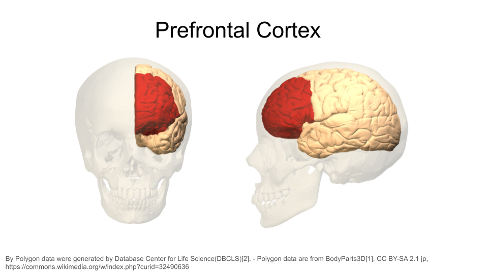
The prefrontal cortex is the part of the brain that is primarily in charge of decision making, reasoning, personality, maintaining social appropriateness, and other complex behaviors that fall under the umbrella of executive functions. This can include planning, self-control, and working towards long-term goals. The prefrontal cortex is located in the very front of the brain, just behind your forehead. One of the most famous brain injury patients was Phineas Gage, a railroad worker who survived an iron rod through his forehead. His prefrontal cortex was destroyed in this accident, and doctors noted huge behavioral and personality changes. You can read more about his case here.
Autism spectrum disorder (ASD) is a neurological disorder that affects behavioral and social interactions, among other things. Although ASD can be diagnosed at any age, it’s considered a neurodevelopmental disorder because symptoms usually show up within the first two years of life. Individuals diagnosed with ASD can experience a wide range of symptoms, including differences in social behaviors and communication styles, as well as intellectual disabilities and physical issues like sensory sensitivities or gastrointestinal problems.
The gut-brain axis is the term used for the proposed connection between the gut microbiome and the brain. In recent years, studies have identified links between immune-related neurological symptoms and the presence of intestinal inflammation. There are around 100 million neurons in the human gut, and around 70% of the serotonin (an important neurotransmitter) in the human body is made in the gut. One proposed mechanism for how the gut-brain axis works is that inflamed intestinal tissue triggers the synthesis of cytokines and other proteins involved in the immune response; these proteins may attack nervous system cells. A possible link between the gut microbiome and increased symptom severity is actively being studied for Major Depressive Disorder, Autism Spectrum Disorder, fibromyalgia, migraines, Parkinson’s disease, Alzheimer’s disease, and more.
Deciding on your research question
Before you start working with the dataset, you should decide what you want to explore.
Is there a gene or set of genes linked to a biological process you’re particularly interested in? This could include things like “cytokines”, “anti-inflammatory genes”, “genes involved in building neurons”, or any biological process you find interesting!
Is there a disease or disorder you’d like to focus on? You can explore known risk genes for this disorder (or genes that are protective against this disorder). You don’t have to limit yourself to Autism Spectrum Disorder, either; there are many disorders that have a shared genetic and biological basis!
Are you curious about the standard “housekeeping” genes that are broadly expressed across cell types and involved in common biological processes, like DNA replication, metabolism, and cell cycle regulation? These processes are vitally important for proper cellular function, so disruption in them can cause problems for the organism.
Once you’ve picked a disorder or cellular process that interests you, start looking up research papers to find genes! You can use sites like PubMed and Google Scholar to look up studies. Skim through at least 4-5 different papers that contain some type of gene name or a biological process. DO NOT GET TOO LOST INTO THE PAPERS! Make sure you skim through them for important information, but be willing to set a paper aside if you’re struggling to find what you need.
The original study
The original study, Human Gut Microbiota from Autism Spectrum Disorder Induces Behavioral Deficits in Mice, was published in 2019. Gut microbiota are known to be different between individuals with ASD and individuals who are considered typically-developing. Additionally, some individuals with ASD also experience gastrointestinal symptoms, and their gut microbiota show the greatest difference when compared to the gut microbiota of typically-developing individuals. Some researchers have proposed that gut bacteria can influence some of the symptoms of ASD. The relationship between the intestinal microbiome and the development and function of the human brain is known as the gut-brain axis.
In this study, researchers explored whether they could induce ASD-like behaviors in mice by changing their gut microbiome. Mice in this experiment received fecal transplants. Some mice received transplants from humans who have been diagnosed with ASD, while other mice received transplants from humans who did not have any diagnosis (control). This allowed researchers to control the composition of the gut microbiome in each mouse. They discovered that colonization with gut microbiota was enough to induce ASD-like behaviors in the mice. They also let the mice breed and collected gene expression data from the brains of their offspring to explore whether changing the gut microbiota could result in changed gene expression. In particular, they discovered that the offspring of mice who received stool from ASD donors showed different gene splicing and expression profiles of certain ASD-relevant genes.
Note
It is important to note that researchers are not suggesting that ASD is entirely induced by gut bacteria. There is a strong genetic component to ASD. Scientists have known for years that there are both genetic and environmental components to the development or severity of some ASD symptoms. This research explores one possible environmental component.
You can read the original research paper here.
The mouse as a model organism
The mouse is the most commonly-used model organism in laboratory work. In fact, mice and rats make up 95% of the lab animal population, and more than 80% of the research that has been awarded the Nobel Prize for Medicine was done at least in part with mouse models (https://www.cshl.edu/of-mice-and-model-organisms/, https://fbresearch.org/medical-advances/nobel-prizes).

So what makes mice such good model organisms for biomedical research? Well, first, they’re economical and relatively easy to keep. Since mice are small, they don’t require a huge amount of space or food. They also have fast reproductive cycles, so researchers can study multiple generations within only a few years. Most importantly, though, mice and humans are both mammals and have about 85% of their protein-coding genome in common. As a result, mouse physiology is quite similar to human physiology. The mouse circulatory, reproductive, digestive, hormonal, and nervous systems are frequently used as models to study how humans grow, age, and develop chronic diseases. They are particularly important model organisms for cancer research and neuroscience.
You can find additional information about how the mouse is used in research here!
Identifying genes of interest with the Mouse Genome Informatics database
The Mouse Genome Informatics database that tracks mouse genes and expression data. A full introduction to everything available through the MGI can be found here. We’ll reproduce some of it below.
Mouse gene IDs
In this dataset, genes are identified using their Ensembl Gene ID code. Every gene has an ID that looks something like this:
ENSMUSG00000000001
ENS stands for “Ensembl”. Ensembl is a genome database project managed by the European Bioinformatics Institute. It’s one of several databases like this. Others include NIH’s National Center for Biotechnology Information (NCBI; the organization that manages GenBank and PubMed) and the University of California, Santa Cruz (UCSC) Genome Browser. When a gene code starts with “ENS”, it means you should look up the gene code in the Ensembl database.
MUS stands for “Mus”, which is the genus for the mouse.
G stands for “Gene”. When you see “G” in the ID name, you know you are working with a gene. There are also codes for transcripts (“T”), exons (“E”), and proteins (“P”).
00000000001 is the numerical code associated with the gene.
Picking your genes
The MGI allows you to look up information about genes you’re interested in but don’t know much about. This is particularly helpful if you are interested in genes that were identified in other research organisms or in previous studies. You could also start by looking up a human disease and associated human risk genes, then identify the homologous mouse genes.
Make sure you are recording the name and gene ID for the mouse! Gene names are often similar between mice and humans, but the gene IDs will be very different. If you don’t use the correct gene ID when exploring this dataset, you won’t get very far.
Looking up details on a mouse gene when you have the Ensembl gene ID
Open the Mouse Genome Informatics website. To look up information on a particular gene of interest, choose the “Genes” button.

Next, type the gene ID into the “Search” bar up top. We’ll look up “ENSMUSG00000079516”.

After you type the gene ID into the Search bar and hit enter, you should see a new page with basic information about the gene. Click on the gene symbol (in this example, Reg3a) to get more detailed information.
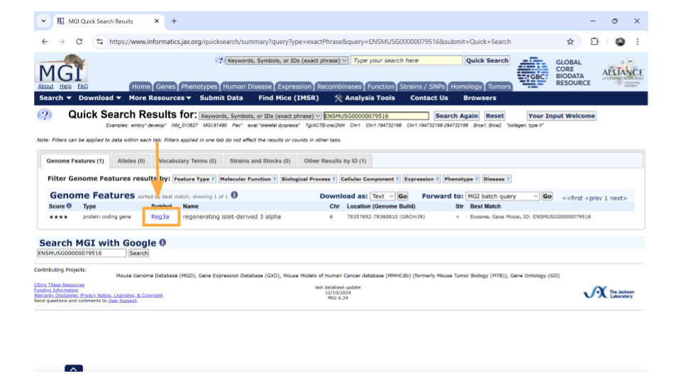
Note
You might come across some unexpected terms when you search the MGI for your gene ID. In addition to genes, Ensembl gene IDs are also given to “pseudogenes”, “putative genes”, and “lncRNA”.
pseudogene: This is a stretch of DNA that looks like a gene but doesn’t actually code for any protein products. It’s essentially a copy of a gene that contains mutations that prevent translation into a protein product. The mutations can include partial deletions, missing promoters, missing start codons, premature stop codons, frameshift mutations, or missing introns. Any of these are enough to result in a pseudogene.
putative gene: This is a DNA segment that is believed to be a gene, but its function and protein product has not been confirmed. They are frequently identified based on the presence of an Open Reading Frame. Putative genes are not given names until they become confirmed genes.
lncRNA: This stands for “long non-coding RNA”. lncRNA is a type of RNA molecule that is transcribed from DNA but does not code for proteins. These RNA molecules are at least 200-500 nucleotides long and play roles in various biological processes, like gene regulation.
On the new page that you open, details about the gene are organized into familiar categories. Down the left-hand side of the page, you will see sections about the chromosomal location, homology, gene ontology, expression data, and more. Most sections are expanded by default, but you’ll need to expand the “homology” section yourself.

Once this section is expanded, you can find information about possible human homologs to the mouse gene, including alternate names and where the human homolog is located in the human genome.

If you continue scrolling down the page, you can also examine the pathways and processes the gene product is involved in under the “gene ontology” section. Clicking on the blue squares takes you to a page with more information about how that particular gene was assigned to a pathway or molecular process.

Directly underneath the “ontology” section is information about when the gene is expressed during development. You can learn more information by clicking on the blue squares, or by clicking on the links in the upper right-hand corner. These links will take you to other websites.
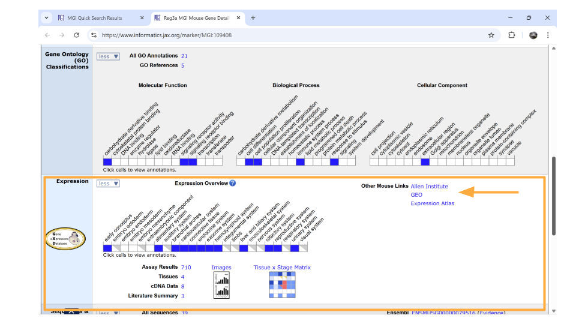
Looking up genes based on human gene name
You may have identified a human gene that you’re interested in for your project, so you need to figure out what the mouse ortholog is and (more importantly) what the mouse Ensembl ID is. Luckily, the MGI allows you to search based on the human gene name.
Let’s say you’re interested in the human gene REG3A, pancreatic secretory protein that may be involved in cell proliferation or differentiation. It also is upregulated as a result of pancreatic inflammation.
Open the Mouse Genome Informatics website. To look up information on this human gene, type “REG3A” into the “Quick Search” bar and press enter.
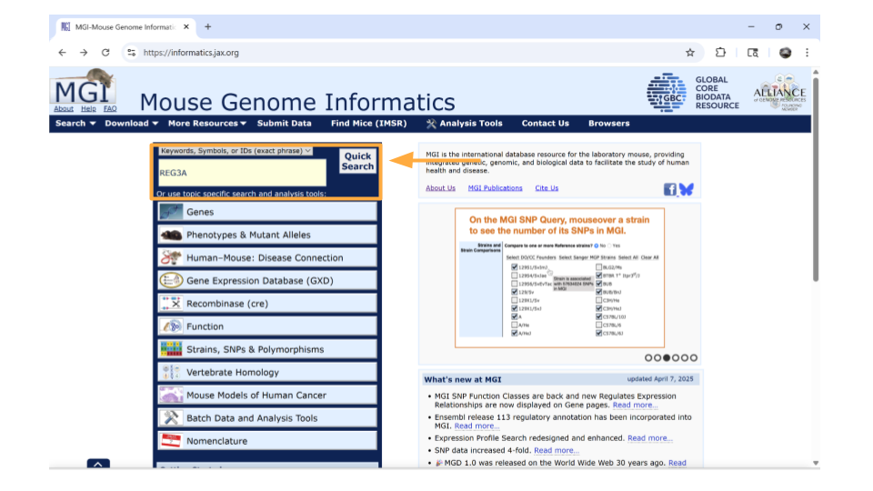
You’ll notice that MGI returns 3 possible mouse genes that are orthologs to the human gene REG3A. This is totally normal! Remember, orthologs are gene that shares the same ancestry. In this case, there was likely a gene duplication event in the mouse ancestor after it split off from the human ancestor.
You can pick whichever ortholog you like (or even pick all of them). For this example, we’ll choose the mouse gene “Reg3a”. Click on the gene symbol (in this example, Reg3a) to get more detailed information.

Note
You might come across some unexpected terms when you search the MGI for your gene ID. In addition to genes, Ensembl gene IDs are also given to “pseudogenes”, “putative genes”, and “lncRNA”.
pseudogene: This is a stretch of DNA that looks like a gene but doesn’t actually code for any protein products. It’s essentially a copy of a gene that contains mutations that prevent translation into a protein product. The mutations can include partial deletions, missing promoters, missing start codons, premature stop codons, frameshift mutations, or missing introns. Any of these are enough to result in a pseudogene.
putative gene: This is a DNA segment that is believed to be a gene, but its function and protein product has not been confirmed. They are frequently identified based on the presence of an Open Reading Frame. Putative genes are not given names until they become confirmed genes.
lncRNA: This stands for “long non-coding RNA”. lncRNA is a type of RNA molecule that is transcribed from DNA but does not code for proteins. These RNA molecules are at least 200-500 nucleotides long and play roles in various biological processes, like gene regulation.
On the new page that you open, details about the gene are organized into familiar categories. But first, let’s take a look at the IDs on the right-hand side of the “summary” section. In particular, we’re interested in the NCBI link. Click this link.

We’re now on the NCBI page for the mouse gene Reg3a, which has the Ensembl ID for this gene. Copy this so you can later use it to look through the dataset!

Return back to the MGI page on the Reg3a gene. Down the left-hand side of the page, you will see sections about the chromosomal location, homology, gene ontology, expression data, and more. Most sections are expanded by default, but you’ll need to expand the “homology” section yourself.
Once this section is expanded, you can find information about possible human homologs to the mouse gene, including alternate names and where the human homolog is located in the human genome.
If you continue scrolling down the page, you can also examine the pathways and processes the gene product is involved in under the “gene ontology” section. Clicking on the blue squares takes you to a page with more information about how that particular gene was assigned to a pathway or molecular process.
Directly underneath the “ontology” section is information about when the gene is expressed during development. You can learn more information by clicking on the blue squares, or by clicking on the links in the upper right-hand corner. These links will take you to other websites.
Looking up genes associated with a human disease
You may not know a particular gene that you want to explore in this dataset, but maybe you do have a human disease or condition that you’re interested in. You can look up mouse genes that might be associated with this disease in the MGI as your starting point.
Open the Mouse Genome Informatics website. Choose the tab that says “Human-Mouse: Disease Connection”.
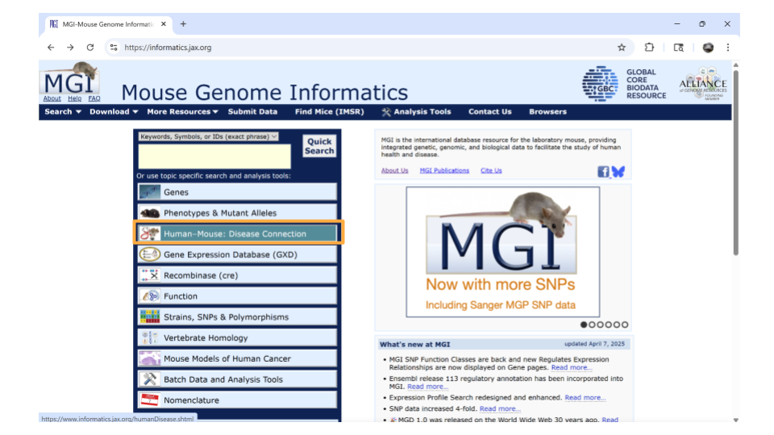
You’ll then want to choose “Disease or Phenotype Name” from the drop-down menu on the left and type the disease of interest into the search bar on the right. For this example, let’s look up “pancreatic inflammation”.
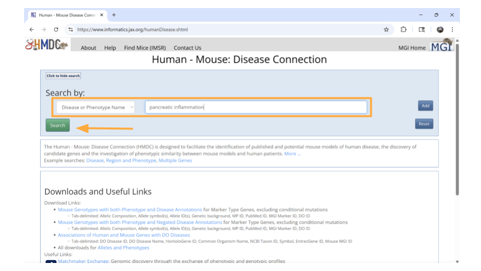
After a brief pause (in which you may see graphics of a human and mouse running on wheels), a new page will open that lists human genes associated with pancreatic inflammation, as well as the mouse orthologs for those genes. This graphic will also indicate the molecular function these genes are associated with. You can click on any of the mouse genes to explore further. Let’s click on the top hit, Abcb1a.
You should now be on a page that contains all sorts of information about the mouse gene Abcb1a. In the “summary” section up top, you can click on the NCBI ID to get the Ensembl mouse ID for this gene.

Specifically, you will find the Ensemble ID for the mouse gene Abcb1a under the “See Related” section. Copy this so you can later use it to look through the dataset!

Return back to the MGI page on the Abcb1a gene. Down the left-hand side of the page, you will see sections about the chromosomal location, homology, gene ontology, expression data, and more. Most sections are expanded by default, but you’ll need to expand the “homology” section yourself.
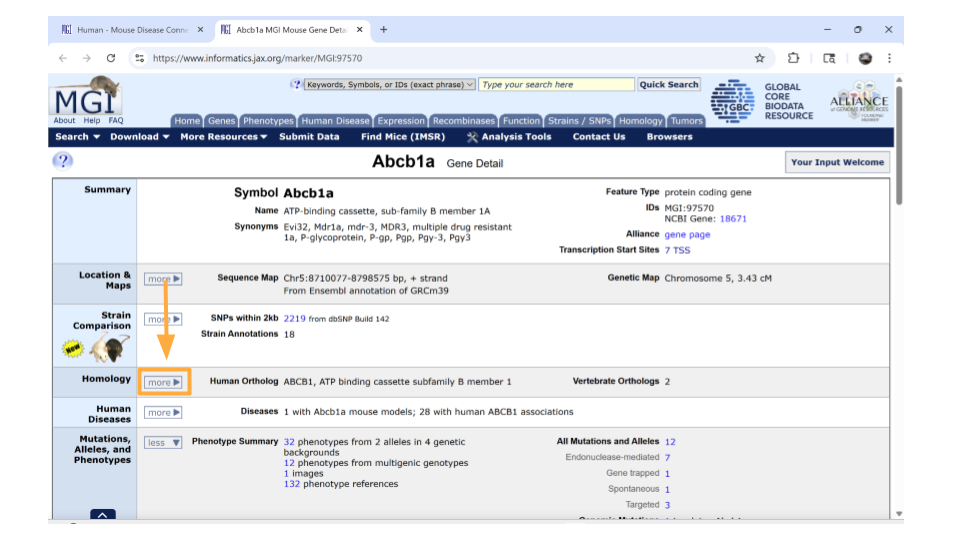
Once this section is expanded, you can find information about possible human homologs to the mouse gene, including alternate names and where the human homolog is located in the human genome.
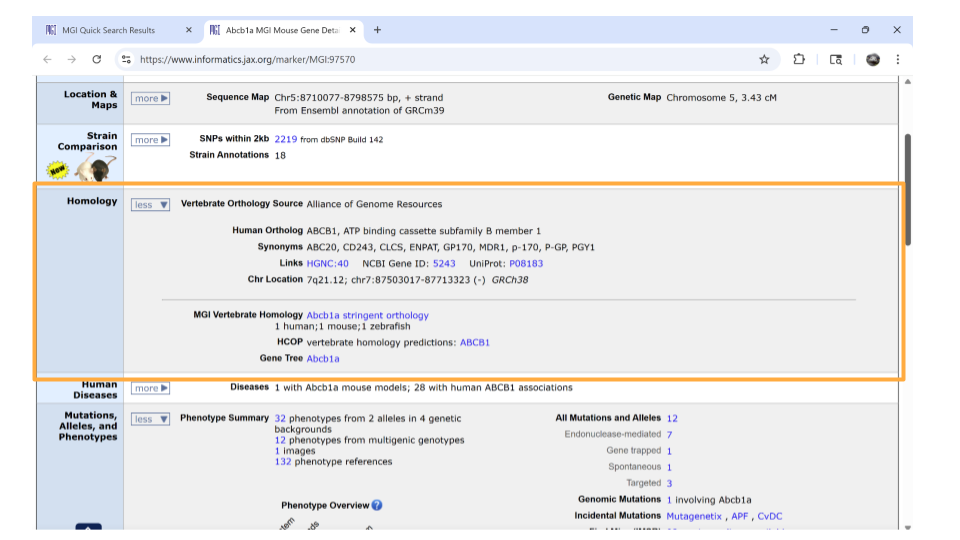
If you continue scrolling down the page, you can also examine the pathways and processes the gene product is involved in under the “gene ontology” section. Clicking on the blue squares takes you to a page with more information about how that particular gene was assigned to a pathway or molecular process.
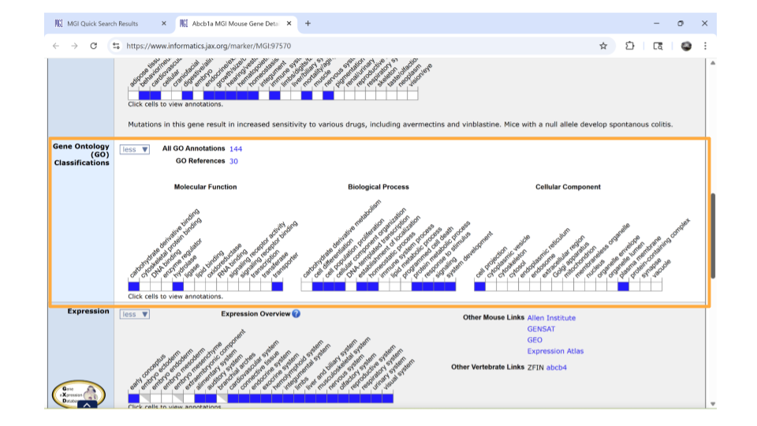
Directly underneath the “ontology” section is information about when the gene is expressed during development. You can learn more information by clicking on the blue squares, or by clicking on the links in the upper right-hand corner. These links will take you to other websites.
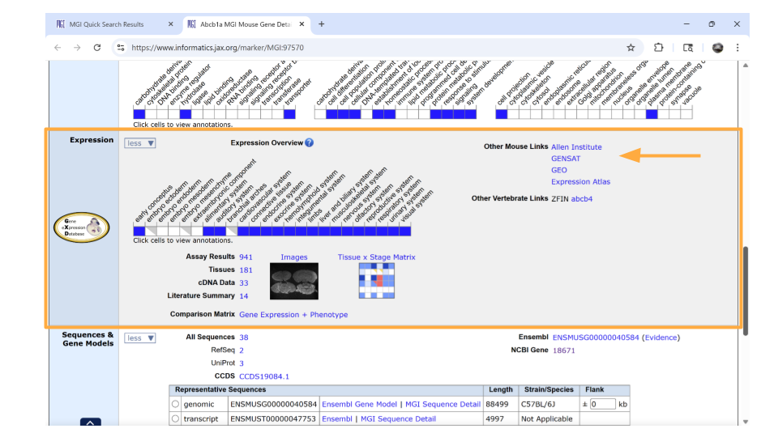
Now that you have your genes of interest, you’re ready to start working with the dataset.
Exploring the gene expression count data
Let’s start by looking at a dataset that includes information on how many times each gene was expressed in a sample. This is the gene expression count dataset.
This dataset gives us an idea of the scale of gene expression - for example, which genes are expressed the most? Which genes are expressed the least? This is particularly useful when you want to know if a gene is usually turned on or off in a sample.
Package Install and Load
We will need to install the tidyverse package for this activity.
Type the following into the SciServer console and press return to run the code.
install.packages("tidyverse")Next, we will load the package so it’s ready to use:
library(tidyverse)
Note
Packages are collections of R code, data, and documentation that extend the base functionality of R. Think of them like “expansion packs” on top of your basic R software.
Packages are developed by the R community and made available through repositories like CRAN (Comprehensive R Archive Network), Bioconductor, and GitHub. They are especially useful if you want to do a specialized kind of analysis, such as genomic analysis!
We use the library command to load and attach packages to the R environment. This means links the package you downloaded to your current session of R.
The “tidyverse” package that you loaded is useful for loading, wrangling, and exploring data.
Loading the gene expression count data
You can load this dataset into R using the following code:
gutbrain_genes <- read_csv("https://genomicseducation.org/data/mouse_gutbrain_de_counts.csv")Rows: 55421 Columns: 140
── Column specification ────────────────────────────────────────────────────────
Delimiter: ","
chr (1): GeneID
dbl (139): SRR6652436, SRR6652443, SRR6652469, SRR6652471, SRR6652505, SRR66...
ℹ Use `spec()` to retrieve the full column specification for this data.
ℹ Specify the column types or set `show_col_types = FALSE` to quiet this message.This dataset has 140 columns. Each row represents a gene. Each column is an individual mouse (sample), except for the first column (“GeneID”, which is the Ensembl gene IDs) and the last column (“total_counts”, which is the sum across all mice).
Exploring and summarizing count data
When you first open the gene expression data, you want to verify that the data has loaded correctly. You can do this with the head and tail commands. Remember, head prints the first 6 rows of a dataset, while tail prints the last 6 rows.
head(gutbrain_genes)# A tibble: 6 × 140
GeneID SRR6652436 SRR6652443 SRR6652469 SRR6652471 SRR6652505 SRR6652506
<chr> <dbl> <dbl> <dbl> <dbl> <dbl> <dbl>
1 ENSMUSG0000… 0 0 0 0 0 0
2 ENSMUSG0000… 0 0 0 0 0 0
3 ENSMUSG0000… 0 0 0 0 0 0
4 ENSMUSG0000… 0 0 0 0 0 0
5 ENSMUSG0000… 0 0 0 0 0 0
6 ENSMUSG0000… 0 0 0 0 0 0
# ℹ 133 more variables: SRR6652507 <dbl>, SRR6652508 <dbl>, SRR6652509 <dbl>,
# SRR6652510 <dbl>, SRR6652511 <dbl>, SRR6652512 <dbl>, SRR6652513 <dbl>,
# SRR6652514 <dbl>, SRR6652515 <dbl>, SRR6652521 <dbl>, SRR6652522 <dbl>,
# SRR6652389 <dbl>, SRR6652390 <dbl>, SRR6652391 <dbl>, SRR6652392 <dbl>,
# SRR6652393 <dbl>, SRR6652394 <dbl>, SRR6652395 <dbl>, SRR6652396 <dbl>,
# SRR6652397 <dbl>, SRR6652398 <dbl>, SRR6652399 <dbl>, SRR6652400 <dbl>,
# SRR6652401 <dbl>, SRR6652402 <dbl>, SRR6652403 <dbl>, SRR6652404 <dbl>, …tail(gutbrain_genes)# A tibble: 6 × 140
GeneID SRR6652436 SRR6652443 SRR6652469 SRR6652471 SRR6652505 SRR6652506
<chr> <dbl> <dbl> <dbl> <dbl> <dbl> <dbl>
1 ENSMUSG0000… 0 0 0 0 0 0
2 ENSMUSG0000… 18605 12561 14910 17809 6377 14750
3 ENSMUSG0000… 4469 2944 3748 5384 2409 7057
4 ENSMUSG0000… 117349 27498 68321 62645 65449 126271
5 ENSMUSG0000… 175 36 87 100 148 18
6 ENSMUSG0000… 3478 775 2437 1510 1665 5238
# ℹ 133 more variables: SRR6652507 <dbl>, SRR6652508 <dbl>, SRR6652509 <dbl>,
# SRR6652510 <dbl>, SRR6652511 <dbl>, SRR6652512 <dbl>, SRR6652513 <dbl>,
# SRR6652514 <dbl>, SRR6652515 <dbl>, SRR6652521 <dbl>, SRR6652522 <dbl>,
# SRR6652389 <dbl>, SRR6652390 <dbl>, SRR6652391 <dbl>, SRR6652392 <dbl>,
# SRR6652393 <dbl>, SRR6652394 <dbl>, SRR6652395 <dbl>, SRR6652396 <dbl>,
# SRR6652397 <dbl>, SRR6652398 <dbl>, SRR6652399 <dbl>, SRR6652400 <dbl>,
# SRR6652401 <dbl>, SRR6652402 <dbl>, SRR6652403 <dbl>, SRR6652404 <dbl>, …You may want to explore the distribution of your count data using summary. This command lets you see the mean, median, minimum, and maximum for each numeric column. You can specify which column you’d like to get summary data for, or look at summary data for all the columns.
summary(gutbrain_genes$total_counts) Min. 1st Qu. Median Mean 3rd Qu. Max.
0.000e+00 9.600e+01 6.666e+03 4.130e+06 7.888e+05 7.732e+09 You can also find the total number of reads in the dataset.
sum(gutbrain_genes$total_counts)[1] 2.28913e+11Plotting histograms and dealing with zero counts
A histogram is a good way to visually explore the distribution of the read counts, as well as get an idea of how many genes have few or no reads. Use a log10 scale on the x-axis.
hist(log10(gutbrain_genes$total_counts), main="Log10 Read Counts for Mouse RNA-seq sample")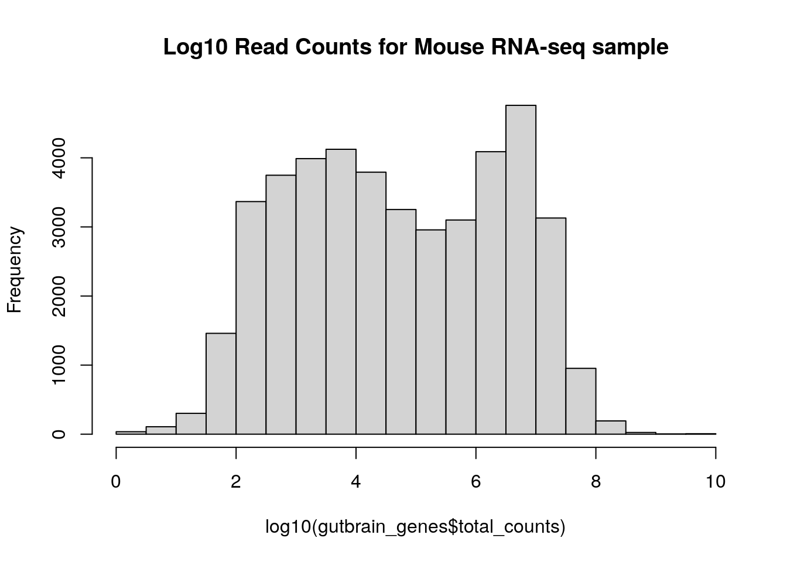
You may choose to deal with zero-count genes by adding 0.1 to each count before the log10 transformation.
gutbrain_genes$total_counts_trans <- gutbrain_genes$total_counts + 0.1
hist(log10(gutbrain_genes$total_counts_trans), main="Transformed Log10 Read Counts for Mouse RNA-seq sample")
Looking at read count for a single gene
You may want to look at the read count for a specific gene in your dataset. This can be done with the filter command. Let’s look at the read counts for the Reg3a gene, across all mice. Remember, this is the gene we looked up earlier in the MGI database. The Ensembl gene ID is “ENSMUSG00000079516”.
filter(gutbrain_genes, GeneID == "ENSMUSG00000079516")Visualize gene counts of multiple genes across groups
We can also look at the differential gene expression of a set of genes at once! This is usually done by creating a heatmap. In RNA-seq analyses, we usually put individual samples on the x-axis and normalized gene counts on the y-axis.
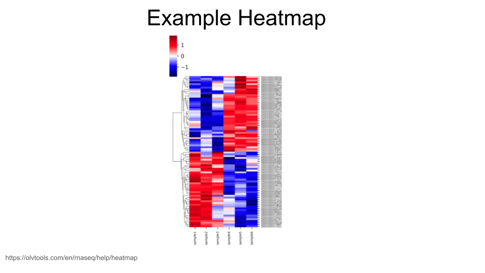
When creating heatmaps, we want to work with a dataset that includes normalized gene expression data for each gene. We loaded a dataset like this above that we called gutbrain_genes. If you don’t have an object in your environment called this, scroll back up to the “Loading the gene expression count data” section and run the code again.
The dataset you loaded has expression data for 55,421 different genes, which is too many to visualize. (You can try, but R will usually throw an error if you do.) In general, though, we are mostly interested in looking at the visualization of a particular group of genes, or a gene set.
Let’s say we have identified 6 mouse genes that have been linked to the development of motor neurons. We’re interested in whether these genes show differential gene expression between the striatum and the prefrontal cortex. We can use the filter command to pull out normalized gene expression data for just these six genes.
These are the genes (with gene IDs) that we’re including in our gene set:
Sema3a: ENSMUSG00000028883 Mapk8: ENSMUSG00000021936 Nrcam: ENSMUSG00000020598 Dlg4: ENSMUSG00000020886 Slit1: ENSMUSG00000025020 Creb1: ENSMUSG00000025958
First, create a vector that contains these gene IDs. (You can replace the gene IDs with the ones for your genes of interest, but make sure you use Ensembl gene IDs! They should all start with “ENSMUSG”.)
Each gene ID should have quotation marks around it, and the different IDs should be separated using a comma.
gene_set <- c("ENSMUSG00000028883", "ENSMUSG00000021936", "ENSMUSG00000020598", "ENSMUSG00000020886", "ENSMUSG00000025020", "ENSMUSG00000025958")Now we simply filter the gutbrain_genes dataset so that we only keep the rows for the gene IDs in our gene set. Remember, we want to use the filter command. The combination of filter and %in% tells R to only keep those rows in the gutbrain_genes dataset if the gene ID is also found in our gene list we made earlier.
gutbrain_motor <- filter(gutbrain_genes, gutbrain_genes$GeneID %in% gene_set)
head(gutbrain_motor)# A tibble: 6 × 141
GeneID SRR6652436 SRR6652443 SRR6652469 SRR6652471 SRR6652505 SRR6652506
<chr> <dbl> <dbl> <dbl> <dbl> <dbl> <dbl>
1 ENSMUSG0000… 86704 93818 62879 116582 50148 93087
2 ENSMUSG0000… 2220069 1537477 1521896 1355721 945194 1790682
3 ENSMUSG0000… 462615 362226 557979 714703 396624 750340
4 ENSMUSG0000… 113380 104242 156926 223405 111427 211342
5 ENSMUSG0000… 26284 19265 74037 56337 49613 93139
6 ENSMUSG0000… 44034 30884 26225 45861 26901 46580
# ℹ 134 more variables: SRR6652507 <dbl>, SRR6652508 <dbl>, SRR6652509 <dbl>,
# SRR6652510 <dbl>, SRR6652511 <dbl>, SRR6652512 <dbl>, SRR6652513 <dbl>,
# SRR6652514 <dbl>, SRR6652515 <dbl>, SRR6652521 <dbl>, SRR6652522 <dbl>,
# SRR6652389 <dbl>, SRR6652390 <dbl>, SRR6652391 <dbl>, SRR6652392 <dbl>,
# SRR6652393 <dbl>, SRR6652394 <dbl>, SRR6652395 <dbl>, SRR6652396 <dbl>,
# SRR6652397 <dbl>, SRR6652398 <dbl>, SRR6652399 <dbl>, SRR6652400 <dbl>,
# SRR6652401 <dbl>, SRR6652402 <dbl>, SRR6652403 <dbl>, SRR6652404 <dbl>, …we’re not quite ready to make our heatmap yet. Because we are interested in the gene expression of these six genes in the striatum compared to the prefrontal cortex, we want to control for any possible differences caused by the sample coming from an ASD-type mouse vs a control-type mouse. So we also want to select a subset of the samples so that we’re only using those samples from control-type mice.
The metadata about the samples (basically, a dataset that has information on whether the sample is from an ASD-type mouse or a control-type mouse, as well as whether it is a striatum sample or a prefrontal cortex sample) can be found at the link https://genomicseducation.org/data/mouse_gutbrain_metadata.csv
We can load the data into R.
gutbrain_metadata <- read_csv("https://genomicseducation.org/data/mouse_gutbrain_metadata.csv")Rows: 138 Columns: 6
── Column specification ────────────────────────────────────────────────────────
Delimiter: ","
chr (5): sample_id, age, mouse_status, sex, tissue
dbl (1): source_name
ℹ Use `spec()` to retrieve the full column specification for this data.
ℹ Specify the column types or set `show_col_types = FALSE` to quiet this message.head(gutbrain_metadata)# A tibble: 6 × 6
sample_id age mouse_status sex source_name tissue
<chr> <chr> <chr> <chr> <dbl> <chr>
1 SRR6652436 P45 ASD male 3 striatum
2 SRR6652443 P45 Control male 4 striatum
3 SRR6652469 P45 ASD male 3 prefrontal_cortex
4 SRR6652471 P45 Control male 5 prefrontal_cortex
5 SRR6652505 P45 ASD male 3 prefrontal_cortex
6 SRR6652506 P45 ASD male 3 prefrontal_cortexSince we want to make sure we’re only looking at samples from control-type mice, we will use filter to create a vector from gutbrain_metadata. In this case, we will filter based on the “mouse_status” column. At the same time, we’re going to order our samples so that all the prefrontal cortex samples are listed first. (This will be helpful for a later step.) We can do this using the arrange function and telling R to arrange based on the “tissue” column.
gutbrain_controls <- filter(gutbrain_metadata, mouse_status == "Control")
gutbrain_controls <- arrange(gutbrain_controls, tissue)
head(gutbrain_controls)# A tibble: 6 × 6
sample_id age mouse_status sex source_name tissue
<chr> <chr> <chr> <chr> <dbl> <chr>
1 SRR6652471 P45 Control male 5 prefrontal_cortex
2 SRR6652507 P45 Control male 5 prefrontal_cortex
3 SRR6652508 P45 Control male 5 prefrontal_cortex
4 SRR6652511 P45 Control male 5 prefrontal_cortex
5 SRR6652512 P45 Control male 5 prefrontal_cortex
6 SRR6652513 P45 Control male 4 prefrontal_cortexExcellent. We now have a dataset that contains a subset in the order we want. We next use the “sample_id” column to subset gutbrain_motor (our dataset that has gene expression counts for the motor neuron genes). We will use a combination of the select function and all_of to tell R to keep only those columns that belong to samples found in gutbrain_controls$sample_id, as well the “GeneID” column.
gutbrain_motor_controls <- select(gutbrain_motor, GeneID, all_of(gutbrain_controls$sample_id))
head(gutbrain_motor_controls)# A tibble: 6 × 59
GeneID SRR6652471 SRR6652507 SRR6652508 SRR6652511 SRR6652512 SRR6652513
<chr> <dbl> <dbl> <dbl> <dbl> <dbl> <dbl>
1 ENSMUSG0000… 116582 71492 119670 109645 119984 113530
2 ENSMUSG0000… 1355721 1064719 2031278 1341461 1356546 1005090
3 ENSMUSG0000… 714703 494635 889211 773767 814278 583819
4 ENSMUSG0000… 223405 141912 253795 210291 226774 177495
5 ENSMUSG0000… 56337 51485 100228 77037 81906 38079
6 ENSMUSG0000… 45861 25904 41466 46340 54418 34669
# ℹ 52 more variables: SRR6652514 <dbl>, SRR6652457 <dbl>, SRR6652458 <dbl>,
# SRR6652459 <dbl>, SRR6652460 <dbl>, SRR6652465 <dbl>, SRR6652466 <dbl>,
# SRR6652472 <dbl>, SRR6652475 <dbl>, SRR6652476 <dbl>, SRR6652477 <dbl>,
# SRR6652478 <dbl>, SRR6652483 <dbl>, SRR6652484 <dbl>, SRR6652489 <dbl>,
# SRR6652490 <dbl>, SRR6652493 <dbl>, SRR6652494 <dbl>, SRR6652495 <dbl>,
# SRR6652496 <dbl>, SRR6652501 <dbl>, SRR6652502 <dbl>, SRR6652519 <dbl>,
# SRR6652520 <dbl>, SRR6652443 <dbl>, SRR6652389 <dbl>, SRR6652390 <dbl>, …Now we have our data subsetted the way we want, but we aren’t quite ready for the heatmap yet. In order for R to make a heatmap from our data, we do have to reformat things a little bit. Right now our data is in “tibble” format, but we want it in a numerical “matrix” format. We can’t switch directly from “tibble” to “matrix” (because the GeneID column is character data, not numerical data). Instead, let’s first convert from “tibble” to a format called “dataframe”.
gutbrain_motor_controls <- as.data.frame(gutbrain_motor_controls)
head(gutbrain_motor_controls) GeneID SRR6652471 SRR6652507 SRR6652508 SRR6652511 SRR6652512
1 ENSMUSG00000025958 116582 71492 119670 109645 119984
2 ENSMUSG00000020886 1355721 1064719 2031278 1341461 1356546
3 ENSMUSG00000020598 714703 494635 889211 773767 814278
4 ENSMUSG00000021936 223405 141912 253795 210291 226774
5 ENSMUSG00000025020 56337 51485 100228 77037 81906
6 ENSMUSG00000028883 45861 25904 41466 46340 54418
SRR6652513 SRR6652514 SRR6652457 SRR6652458 SRR6652459 SRR6652460 SRR6652465
1 113530 103332 97001 102345 95957 102735 91552
2 1005090 1048193 1724172 1740717 1180717 1215738 1470279
3 583819 616193 866479 855316 648777 689727 675686
4 177495 188878 228870 234134 199520 198973 212941
5 38079 44127 89716 94047 46329 39766 86907
6 34669 38678 52139 49261 36656 39818 56182
SRR6652466 SRR6652472 SRR6652475 SRR6652476 SRR6652477 SRR6652478 SRR6652483
1 106272 121799 139247 143758 90735 110299 92550
2 1582988 1382227 1291877 1348795 1882275 1992514 1720010
3 730392 735427 853555 882525 698591 719681 734655
4 223477 243645 279805 293647 209353 209296 199190
5 89217 59269 56943 59246 98441 105691 106731
6 57736 52268 63440 64033 36808 38518 46545
SRR6652484 SRR6652489 SRR6652490 SRR6652493 SRR6652494 SRR6652495 SRR6652496
1 101187 56178 96878 76161 82375 57183 96266
2 1838079 1069673 2134086 1402804 1473418 833637 1606493
3 742310 428069 839438 517242 549512 347943 612757
4 212808 122740 237635 142300 139392 113434 206582
5 106937 101082 222597 75660 69781 41369 78852
6 43841 19872 37920 29039 30838 18093 31774
SRR6652501 SRR6652502 SRR6652519 SRR6652520 SRR6652443 SRR6652389 SRR6652390
1 89445 83469 97820 107506 93818 75942 164607
2 1491160 1510525 1572772 1582930 1537477 1183211 2364182
3 582848 590091 908733 909608 362226 461405 943571
4 172073 179061 244597 245101 104242 129530 250165
5 77077 78557 150917 158140 19265 43151 82912
6 41634 37675 46005 42929 30884 40286 75771
SRR6652391 SRR6652392 SRR6652397 SRR6652398 SRR6652403 SRR6652404 SRR6652407
1 71331 83351 86402 100776 107338 104393 80385
2 1798921 1898285 2397127 2557990 1963347 1983775 1734175
3 431257 447223 509484 539029 594979 604746 452410
4 112141 110775 121799 125800 149214 163027 123876
5 32935 35484 36535 41582 51356 55516 30743
6 37673 37695 49459 43989 43901 46640 31946
SRR6652408 SRR6652413 SRR6652414 SRR6652419 SRR6652420 SRR6652423 SRR6652424
1 78272 79346 82069 94752 98507 102752 104552
2 1773670 1669356 1710965 2015588 2149437 1826044 1922684
3 474278 431907 460830 522158 532731 510297 537442
4 128700 121063 112793 126807 140541 134052 140735
5 34579 56836 51167 35019 43596 56521 55887
6 35804 35609 33758 44273 46344 38209 41549
SRR6652425 SRR6652426 SRR6652431 SRR6652432 SRR6652437 SRR6652438 SRR6652441
1 54485 96788 75146 81598 51747 89820 90296
2 1000300 1901457 1634528 1684465 1241480 2367922 1791891
3 236447 435257 397567 402768 277348 503300 492277
4 68783 124188 105408 110590 70804 147601 124186
5 15075 36151 31525 31085 22569 41819 48781
6 18552 31218 31626 41290 22399 44607 28133
SRR6652442 SRR6652444 SRR6652449 SRR6652450
1 93716 87282 58614 115790
2 1863046 1566800 1031393 2065353
3 515563 368329 290373 538539
4 130502 102475 71073 151330
5 51419 21835 27843 63967
6 32918 27939 36914 63364To our eyes, not much has changed in the format, but it’s very different to R. Now we’re going to tell R to name the rows based on the “GeneID” column, and then delete the current “GeneID” column.
rownames(gutbrain_motor_controls) <- gutbrain_motor_controls$GeneID
gutbrain_motor_controls$GeneID <- NULL
head(gutbrain_motor_controls) SRR6652471 SRR6652507 SRR6652508 SRR6652511 SRR6652512
ENSMUSG00000025958 116582 71492 119670 109645 119984
ENSMUSG00000020886 1355721 1064719 2031278 1341461 1356546
ENSMUSG00000020598 714703 494635 889211 773767 814278
ENSMUSG00000021936 223405 141912 253795 210291 226774
ENSMUSG00000025020 56337 51485 100228 77037 81906
ENSMUSG00000028883 45861 25904 41466 46340 54418
SRR6652513 SRR6652514 SRR6652457 SRR6652458 SRR6652459
ENSMUSG00000025958 113530 103332 97001 102345 95957
ENSMUSG00000020886 1005090 1048193 1724172 1740717 1180717
ENSMUSG00000020598 583819 616193 866479 855316 648777
ENSMUSG00000021936 177495 188878 228870 234134 199520
ENSMUSG00000025020 38079 44127 89716 94047 46329
ENSMUSG00000028883 34669 38678 52139 49261 36656
SRR6652460 SRR6652465 SRR6652466 SRR6652472 SRR6652475
ENSMUSG00000025958 102735 91552 106272 121799 139247
ENSMUSG00000020886 1215738 1470279 1582988 1382227 1291877
ENSMUSG00000020598 689727 675686 730392 735427 853555
ENSMUSG00000021936 198973 212941 223477 243645 279805
ENSMUSG00000025020 39766 86907 89217 59269 56943
ENSMUSG00000028883 39818 56182 57736 52268 63440
SRR6652476 SRR6652477 SRR6652478 SRR6652483 SRR6652484
ENSMUSG00000025958 143758 90735 110299 92550 101187
ENSMUSG00000020886 1348795 1882275 1992514 1720010 1838079
ENSMUSG00000020598 882525 698591 719681 734655 742310
ENSMUSG00000021936 293647 209353 209296 199190 212808
ENSMUSG00000025020 59246 98441 105691 106731 106937
ENSMUSG00000028883 64033 36808 38518 46545 43841
SRR6652489 SRR6652490 SRR6652493 SRR6652494 SRR6652495
ENSMUSG00000025958 56178 96878 76161 82375 57183
ENSMUSG00000020886 1069673 2134086 1402804 1473418 833637
ENSMUSG00000020598 428069 839438 517242 549512 347943
ENSMUSG00000021936 122740 237635 142300 139392 113434
ENSMUSG00000025020 101082 222597 75660 69781 41369
ENSMUSG00000028883 19872 37920 29039 30838 18093
SRR6652496 SRR6652501 SRR6652502 SRR6652519 SRR6652520
ENSMUSG00000025958 96266 89445 83469 97820 107506
ENSMUSG00000020886 1606493 1491160 1510525 1572772 1582930
ENSMUSG00000020598 612757 582848 590091 908733 909608
ENSMUSG00000021936 206582 172073 179061 244597 245101
ENSMUSG00000025020 78852 77077 78557 150917 158140
ENSMUSG00000028883 31774 41634 37675 46005 42929
SRR6652443 SRR6652389 SRR6652390 SRR6652391 SRR6652392
ENSMUSG00000025958 93818 75942 164607 71331 83351
ENSMUSG00000020886 1537477 1183211 2364182 1798921 1898285
ENSMUSG00000020598 362226 461405 943571 431257 447223
ENSMUSG00000021936 104242 129530 250165 112141 110775
ENSMUSG00000025020 19265 43151 82912 32935 35484
ENSMUSG00000028883 30884 40286 75771 37673 37695
SRR6652397 SRR6652398 SRR6652403 SRR6652404 SRR6652407
ENSMUSG00000025958 86402 100776 107338 104393 80385
ENSMUSG00000020886 2397127 2557990 1963347 1983775 1734175
ENSMUSG00000020598 509484 539029 594979 604746 452410
ENSMUSG00000021936 121799 125800 149214 163027 123876
ENSMUSG00000025020 36535 41582 51356 55516 30743
ENSMUSG00000028883 49459 43989 43901 46640 31946
SRR6652408 SRR6652413 SRR6652414 SRR6652419 SRR6652420
ENSMUSG00000025958 78272 79346 82069 94752 98507
ENSMUSG00000020886 1773670 1669356 1710965 2015588 2149437
ENSMUSG00000020598 474278 431907 460830 522158 532731
ENSMUSG00000021936 128700 121063 112793 126807 140541
ENSMUSG00000025020 34579 56836 51167 35019 43596
ENSMUSG00000028883 35804 35609 33758 44273 46344
SRR6652423 SRR6652424 SRR6652425 SRR6652426 SRR6652431
ENSMUSG00000025958 102752 104552 54485 96788 75146
ENSMUSG00000020886 1826044 1922684 1000300 1901457 1634528
ENSMUSG00000020598 510297 537442 236447 435257 397567
ENSMUSG00000021936 134052 140735 68783 124188 105408
ENSMUSG00000025020 56521 55887 15075 36151 31525
ENSMUSG00000028883 38209 41549 18552 31218 31626
SRR6652432 SRR6652437 SRR6652438 SRR6652441 SRR6652442
ENSMUSG00000025958 81598 51747 89820 90296 93716
ENSMUSG00000020886 1684465 1241480 2367922 1791891 1863046
ENSMUSG00000020598 402768 277348 503300 492277 515563
ENSMUSG00000021936 110590 70804 147601 124186 130502
ENSMUSG00000025020 31085 22569 41819 48781 51419
ENSMUSG00000028883 41290 22399 44607 28133 32918
SRR6652444 SRR6652449 SRR6652450
ENSMUSG00000025958 87282 58614 115790
ENSMUSG00000020886 1566800 1031393 2065353
ENSMUSG00000020598 368329 290373 538539
ENSMUSG00000021936 102475 71073 151330
ENSMUSG00000025020 21835 27843 63967
ENSMUSG00000028883 27939 36914 63364Great! Now we can change the format of gutbrain_motor_controls dataset to “matrix” format in order to make our heatmap using the heatmap function.
gutbrain_motor_controls <- as.matrix(gutbrain_motor_controls)
heatmap(gutbrain_motor_controls)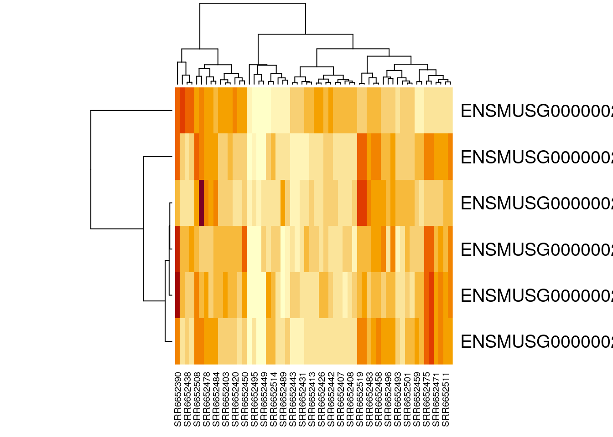
Congratulations, you have just created a heatmap! The map itself is a series of stacked boxes. Each square within the heatmap represents the gene count for a particular gene in a particular sample. By default squares with the high gene counts are colored dark red. Squares with the lowest gene counts are colored pale yellow.
By default, R will order the samples (what we have on the x-axis across the bottom) in a way that clusters similar samples together. This is why we see columns of lighter yellow in the center of the heatmap, with darker orange and red columns on the edges. This suggests that there are groups of samples that have higher gene expression, but it’s hard to tell right now if these groups correspond to the prefrontal cortex vs striatum (which is what we’re interested in). It would be helpful if we could tell R to group based on prefrontal cortex vs striatum instead.
Luckily, this is possible! Remember above when we ordered our samples so that the prefrontal cortex samples were first? This means our dataset is already in the order we want. We can just tell R to use the default ordering of the dataset instead of clustering and rearranging the x-axis.
heatmap(gutbrain_motor_controls, Colv = NA, Rowv = NA)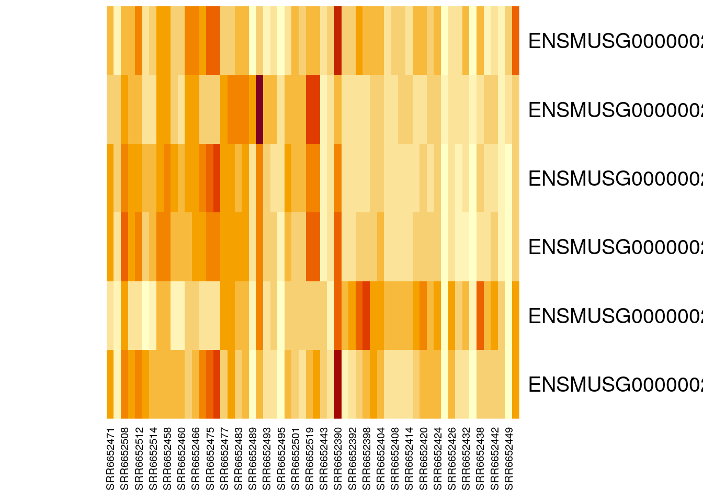
Perfect! Now we can easily see that four of our six genes seem to be expressed in lower levels by the samples on the right side of the heatmap (the striatum samples), while one gene is expressed in higher levels by the striatum. This is definitely intriguing!
Notice that not all the striatum samples have the same expression for each gene. This is normal variation and could be due to actual difference in gene expression levels or be the result of laboratory methods.
Finally, we can customize the heatmap by changing the color scheme and adding a title. As as example, we’re going to tell R to make a spectrum of colors between white and blue, with white indicating the lowest expression and blue indicating the highest expression, and 16 possible color categories.
You can find an extensive list of all the colors available in R at https://www.datanovia.com/en/blog/awesome-list-of-657-r-color-names/. The general convention in biology is that the lightest colors on a heatmap indicate the lowest values.
heatmap(gutbrain_motor_controls, Colv = NA, Rowv = NA, col = colorRampPalette(c("white", "darkblue"))(16), main = " Motor Neuron Gene List Expression")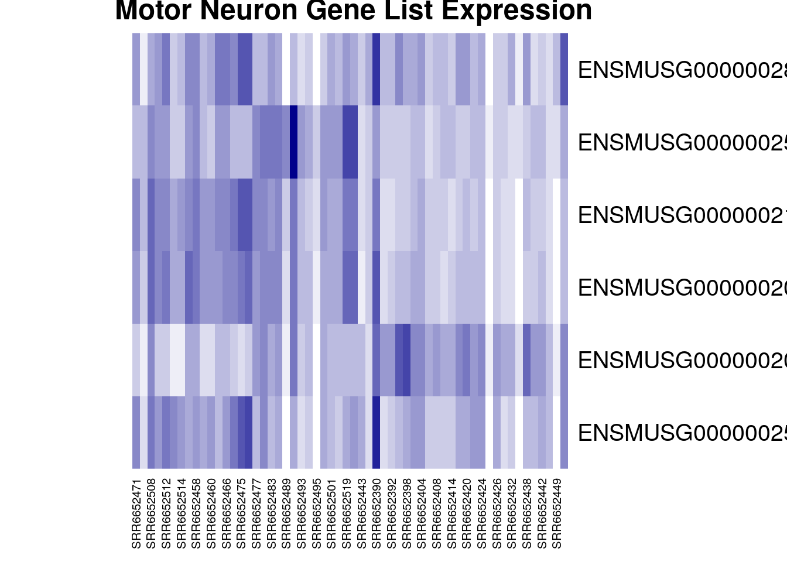
Finally, here’s all the code you just ran to create your heatmap in one place, in case you want to run it again.
#define your geneset and make a vector
gene_set <- c("ENSMUSG00000028883", "ENSMUSG00000021936", "ENSMUSG00000020598", "ENSMUSG00000020886", "ENSMUSG00000025020", "ENSMUSG00000025958")
#create new dataset that only include expression data for your geneset
gutbrain_motor <- filter(gutbrain_genes, gutbrain_genes$GeneID %in% gene_set)
#load sample metadata
gutbrain_metadata <- read_csv("https://genomicseducation.org/data/mouse_gutbrain_metadata.csv")Rows: 138 Columns: 6
── Column specification ────────────────────────────────────────────────────────
Delimiter: ","
chr (5): sample_id, age, mouse_status, sex, tissue
dbl (1): source_name
ℹ Use `spec()` to retrieve the full column specification for this data.
ℹ Specify the column types or set `show_col_types = FALSE` to quiet this message.#filter out non-controls and order columns by tissue type
gutbrain_controls <- filter(gutbrain_metadata, mouse_status == "Control")
gutbrain_controls <- arrange(gutbrain_controls, tissue)
gutbrain_motor_controls <- select(gutbrain_motor, GeneID, all_of(gutbrain_controls$sample_id))
#change format of dataset from "tibble" to "matrix"
gutbrain_motor_controls <- as.data.frame(gutbrain_motor_controls)
rownames(gutbrain_motor_controls) <- gutbrain_motor_controls$GeneID
gutbrain_motor_controls$GeneID <- NULL
gutbrain_motor_controls <- as.matrix(gutbrain_motor_controls)
#create heatmap with custom colors and title
heatmap(gutbrain_motor_controls, Colv = NA, Rowv = NA, col = colorRampPalette(c("white", "darkblue"))(16), main = " Motor Neuron Gene List Expression")
Exploring the differential expression data
Now let’s look a differential expression dataset, which compares gene expression counts between two groups. This dataset gives us an idea how the change in a gene’s expression might be associated with a disorder or a cell type. This is particularly useful for beginning to map the genetic drivers of a particular phenotype.
Package Install and Load
Before you start, make sure to load the tidyverse package! You should still have it installed from last time.
library(tidyverse)Loading the differential expression data
Let’s say you want to open the dataset that compares gene expression between ASD and control mice in both brain regions and call it asd_vs_c. We will do this using read_csv. Copy and paste this command into your console:
asd_vs_c <- read_csv("https://genomicseducation.org/data/mouse_gutbrain_de_autismVcontrol.csv")Rows: 55421 Columns: 7
── Column specification ────────────────────────────────────────────────────────
Delimiter: ","
chr (1): gene
dbl (6): baseMean, log2FoldChange, lfcSE, stat, pvalue, padj
ℹ Use `spec()` to retrieve the full column specification for this data.
ℹ Specify the column types or set `show_col_types = FALSE` to quiet this message.Here are the URLs for all the possible comparisons you can examine with this dataset:
Comparing gene expression between ASD and control mice
Both brain regions: https://genomicseducation.org/data/mouse_gutbrain_de_autismVcontrol.csv
Prefrontal cortex only: https://genomicseducation.org/data/mouse_gutbrain_de_autismVcontrol_in_prefrontalcortex.csv
Striatum only: https://genomicseducation.org/data/mouse_gutbrain_de_autismVcontrol_in_striatum.csv
Comparing gene expression between prefrontal cortex and striatum
All mice: https://genomicseducation.org/data/mouse_gutbrain_de_tissuetype.csv
Only ASD mice: https://genomicseducation.org/data/mouse_gutbrain_de_tissuetype_in_ASDmice.csv
Only control mice: https://genomicseducation.org/data/mouse_gutbrain_de_tissuetype_in_controlmice.csv
Which differential expression dataset should I use?
Even though this dataset is from a single study, there are still lots of options for independent research questions. You have the option to look at gene expression in control-type vs ASD-type mice, as well as gene expression in both striatum and prefrontal cortex. All the mice were male and sacrificed at the same age (45 days).
Additionally, you can look at gene expression in striatum vs prefrontal cortex in only ASD-type mice or only control-type mice. Likewise, you also have the option of looking at gene expression in ASD and control mice, focusing only on striatum or only on prefrontal cortex.
Are you mostly interested in how gene expression differs between the two brain regions? Are you interested in how neurons develop, or how groups of genes involved in movement might be expressed differently in two different regions? These sorts of questions are best to explore using striatum and prefrontal cortex comparisons.
Are you really curious about differential expression in Autism Spectrum Disorder-type mice compared to control-type mice? Are you curious about potential associations between gene expression differences in known neurodevelopmental genes? These questions and others can be explored using the ASD-type mice and control-type mice comparisons.
Ranking the genes by log2FoldChange
The log2FoldChange value gives us an idea of which genes show the greatest differential expression between the ASD mice and the control mice. It is a log-transformed ratio of how many gene transcripts were found in ASD-type mice compared to control-type mice. We take the log2 of this ratio (the fold change) because it makes interpretation easier. Genes with no difference in expression between groups have log2FoldChange values close to zero. Negative log2FoldChange values means a decreased expression (or, a downregulation in gene expression) in the experimental group versus the control group. Positive log2FoldChange values indicate genes that are upregulated, or have increased expression in the experimental group versus the control group.
We can arrange the table based on these values (going from smallest to largest) by copying the following code into your console:
asd_vs_c_ascending <- arrange(asd_vs_c, log2FoldChange)
head(asd_vs_c_ascending)# A tibble: 6 × 7
gene baseMean log2FoldChange lfcSE stat pvalue padj
<chr> <dbl> <dbl> <dbl> <dbl> <dbl> <dbl>
1 ENSMUSG00000089657 16.9 -25.5 1.81 -14.1 2.18e-45 7.29e-41
2 ENSMUSG00000102414 14.9 -25.4 1.89 -13.4 4.00e-41 3.81e-37
3 ENSMUSG00000083812 14.6 -25.4 1.80 -14.1 3.82e-45 7.29e-41
4 ENSMUSG00000074445 11.5 -25.0 1.89 -13.3 3.44e-40 2.62e-36
5 ENSMUSG00000094151 11.2 -25.0 1.79 -14.0 2.97e-44 3.77e-40
6 ENSMUSG00000053773 10.6 -24.9 1.99 -12.5 6.66e-36 4.23e-32The genes at the top of this table have the most negative log2FoldChange values and are downregulated in ASD-type mice.
We can use a similar command to look at the genes with the largest positive log2FoldChange. These are genes that are upregulated in ASD-type mice.
asd_vs_c_descending <- arrange(asd_vs_c, desc(log2FoldChange))
head(asd_vs_c_descending)# A tibble: 6 × 7
gene baseMean log2FoldChange lfcSE stat pvalue padj
<chr> <dbl> <dbl> <dbl> <dbl> <dbl> <dbl>
1 ENSMUSG00000102375 7.19 24.1 2.29 10.5 6.88e-26 2.91e-22
2 ENSMUSG00000104583 5.77 24.0 2.31 10.4 2.48e-25 9.47e-22
3 ENSMUSG00000042414 6.81 6.42 2.93 2.19 2.85e- 2 1.00e+ 0
4 ENSMUSG00000048763 6.33 6.32 2.30 2.75 6.04e- 3 1.00e+ 0
5 ENSMUSG00000117911 5.18 6.03 2.77 2.18 2.93e- 2 1.00e+ 0
6 ENSMUSG00000085421 4.74 5.90 2.93 2.01 4.42e- 2 1.00e+ 0When we’re interpreting the log2FoldChange, remember that you’ll need to do a little bit of math. A log2FoldChange value of 1 is a fold change value of 2 (2^1 = 2). Similarly, a log2FoldChange value of 4 is a fold change value of 8 (2^4 = 8)
If there is a two fold increase (fold change = 2, log2FoldChange = 1) between groups A and B, then the expression in group A is twice as big as the expression in group B.
If there is a two fold decrease (fold change = 0.5, log2FoldChange = -1) between groups A and B, then the expression in group A is half as big as the expression in group B (or B is twice as big as A).
Arranging dataset based on padj
Maybe you also want to arrange the genes by whether the estimated differential expression is significant. Instead of log2FoldChange, you will want to look at padj. You can use the arrange command to sort the results to put the smallest padj values first.
asd_vs_c_sorted <- arrange(asd_vs_c, padj)
head(asd_vs_c_sorted)# A tibble: 6 × 7
gene baseMean log2FoldChange lfcSE stat pvalue padj
<chr> <dbl> <dbl> <dbl> <dbl> <dbl> <dbl>
1 ENSMUSG00000089657 16.9 -25.5 1.81 -14.1 2.18e-45 7.29e-41
2 ENSMUSG00000083812 14.6 -25.4 1.80 -14.1 3.82e-45 7.29e-41
3 ENSMUSG00000094151 11.2 -25.0 1.79 -14.0 2.97e-44 3.77e-40
4 ENSMUSG00000102414 14.9 -25.4 1.89 -13.4 4.00e-41 3.81e-37
5 ENSMUSG00000074445 11.5 -25.0 1.89 -13.3 3.44e-40 2.62e-36
6 ENSMUSG00000053773 10.6 -24.9 1.99 -12.5 6.66e-36 4.23e-32Compare differential gene expression of a single across groups
It might be interesting to look at the expression of a gene across our two brain regions. To do this, we will first load the region-specific datasets.
asd_vs_c_prefrontal <- read_csv("https://genomicseducation.org/data/mouse_gutbrain_de_autismVcontrol_in_prefrontalcortex.csv")Rows: 55421 Columns: 7
── Column specification ────────────────────────────────────────────────────────
Delimiter: ","
chr (1): gene
dbl (6): baseMean, log2FoldChange, lfcSE, stat, pvalue, padj
ℹ Use `spec()` to retrieve the full column specification for this data.
ℹ Specify the column types or set `show_col_types = FALSE` to quiet this message.asd_vs_c_striatum <- read_csv("https://genomicseducation.org/data/mouse_gutbrain_de_autismVcontrol_in_striatum.csv")Rows: 55421 Columns: 7
── Column specification ────────────────────────────────────────────────────────
Delimiter: ","
chr (1): gene
dbl (6): baseMean, log2FoldChange, lfcSE, stat, pvalue, padj
ℹ Use `spec()` to retrieve the full column specification for this data.
ℹ Specify the column types or set `show_col_types = FALSE` to quiet this message.Then we’ll filter out the gene in which we’re interested from each object. Let’s take a look at gene ENSMUSG00000079516, which is the Reg3a gene we previously looked up on MGI.
reg3a_prefrontal <- filter(asd_vs_c_prefrontal, gene == "ENSMUSG00000079516")
reg3a_striatum <- filter(asd_vs_c_striatum, gene == "ENSMUSG00000079516")Finally, take a look at the differential expression of reg3a in each region.
In the prefrontal cortex:
reg3a_prefrontal# A tibble: 1 × 7
gene baseMean log2FoldChange lfcSE stat pvalue padj
<chr> <dbl> <dbl> <dbl> <dbl> <dbl> <dbl>
1 ENSMUSG00000079516 10.6 -22.6 2.11 -10.7 7.30e-27 2.63e-23In the striatum:
reg3a_striatum# A tibble: 1 × 7
gene baseMean log2FoldChange lfcSE stat pvalue padj
<chr> <dbl> <dbl> <dbl> <dbl> <dbl> <dbl>
1 ENSMUSG00000079516 0.371 2.27 2.96 0.765 0.444 NACreating a volcano plot to visualize differential expression of multiple genes
A volcano plot is a great way to visualize differential gene expression between two datasets. These types of plots have log2FoldChange on the x-axis and a log transformed padj on the y-axis.

We will first need to do a log transformation of the padj variable. We do this in order to spread our values out along the y-axis - otherwise, all the dots that represent genes will be too scrunched together.
asd_vs_c$padj_trans <- -log10(asd_vs_c$padj)Now, we just create a scatterplot. The code for this is kind of complicated, so you will want to paste the code below into your console.
Here’s the code for your basic volcano plot. data tells R what data to use, x tells R what the x-axis values should be, and y tells R what the y-axis values should be. Notice that we can just use the column names for x and y!
ggplot(data = asd_vs_c, aes(x = log2FoldChange, y = padj_trans)) +
geom_point()Warning: Removed 17318 rows containing missing values or values outside the scale range
(`geom_point()`).
We can also color code the genes (points) which are significantly upregulated or downregulated. In order to do this, we will need to create a new column in our dataset that identifies whether a gene is upregulated in ASD-type mice, downregulated in ASD-type mice, or has the same regulation in ASD-type mice compared to control-type mice.
In this new column, we can decide the thresholds that a log2FoldChange value must meet in order to be considered upregulated or downregulated. We will consider genes to be upregulated if the log2fold change is greater than 0.6 and downregulated if it is less than -0.6. You can change these thresholds to whatever makes sense for you.
log2foldchange is just a representation of a ratio, so the sign indicates the direction of regulation. It’s important to remember which group is your comparison group!
For example, if you are look at regulation in group A compared to group B, you might have a log2foldchange value of 1 (indicating the gene is expressed twice as much in A as it is in B).
However, if you are looking at regulation in group B compared to group A, the log2foldchange value will be -1 (because the gene is expressed half as much in B as it is in A).
The comparison group matters with ratios!
We are also setting a significant p-value as less than 0.05 (but you can also change this based on your best judgment).
We start by creating a new column called diffexpressed and setting everything to “NO” (as in “no expression differences between ASD-type and control-type mice”). We then specify the genes for which this column should be changed to “UP” or “DOWN” (based on log2FoldChange and padj).
To recap: A gene is labeled “UP” if its log2FoldChange value is greater than 0.6 and its adjusted p-value is less than 0.05.
A gene is labeled “DOWN” if its log2FoldChange value is less than -0.6 and its adjusted p-value is less than 0.05.
asd_vs_c$diffexpressed <- "NO"
asd_vs_c$diffexpressed[asd_vs_c$log2FoldChange > 0.6 & asd_vs_c$padj < 0.05] <- "UP"
asd_vs_c$diffexpressed[asd_vs_c$log2FoldChange < -0.6 & asd_vs_c$padj < 0.05] <- "DOWN"
head(asd_vs_c)# A tibble: 6 × 9
gene baseMean log2FoldChange lfcSE stat pvalue padj padj_trans
<chr> <dbl> <dbl> <dbl> <dbl> <dbl> <dbl> <dbl>
1 ENSMUSG00000… 16.9 -25.5 1.81 -14.1 2.18e-45 7.29e-41 40.1
2 ENSMUSG00000… 14.6 -25.4 1.80 -14.1 3.82e-45 7.29e-41 40.1
3 ENSMUSG00000… 11.2 -25.0 1.79 -14.0 2.97e-44 3.77e-40 39.4
4 ENSMUSG00000… 14.9 -25.4 1.89 -13.4 4.00e-41 3.81e-37 36.4
5 ENSMUSG00000… 11.5 -25.0 1.89 -13.3 3.44e-40 2.62e-36 35.6
6 ENSMUSG00000… 10.6 -24.9 1.99 -12.5 6.66e-36 4.23e-32 31.4
# ℹ 1 more variable: diffexpressed <chr>Okay! We can now add some color to the volcano plot we made earlier. We do this by adding a line to our code that tells R to color the data points based on the diffexpressed column (col = diffexpressed). We also add a line about the colors we want to use (scale_color_manual). In this case, we have chosen to make the points for downregulated genes turquoise and the points for upregulated genes gold. The additional command labels just creates the labels on the legend.
You can find an extensive list of all the colors available in R at https://www.datanovia.com/en/blog/awesome-list-of-657-r-color-names/.
ggplot(data = asd_vs_c, aes(x = log2FoldChange, y = padj_trans, col = diffexpressed)) +
geom_point() +
scale_color_manual(values = c("turquoise", "grey", "gold"),
labels = c("Downregulated", "Not significant", "Upregulated")) Warning: Removed 17318 rows containing missing values or values outside the scale range
(`geom_point()`).
We can also label genes of interest in our plot. Let’s label the Reg3a gene (the same one we looked up in the MGI database), as well as Pcdh12 (or protocadherin 12). The two gene IDs we need to know are ENSMUSG00000079516 and ENSMUSG00000024440.
We will create another new column in our dataset. We will then tell R In this new column, the genes in our list (Reg3a and Pcdh12) are named, which everything else will have a missing name. When we remake the volcano plot, R will only label those points that do not have missing names in the gene_label column.
This is going to require a little bit of R trickery and something called a “case_when” statement.
In R, an “case_when” statement tells R to do something only when a condition is true. In our command, R is going through the asd_vs_c row by row. For each row, we are telling R to first check whether the geneID of that row is “ENSMUSG00000079516”. If it is, then R will fill in the gene_label column with the gene symbol “Reg3a”. If it is not, R moves onto the next part of our command.
When R moves onto this second command, it’s now checking to see if the geneID for the row is “ENSMUSG00000024440”. If it is, then R fills in the gene_label column with the gene symbol “Pcdh12”. If it is not, R moves to the third command in the case_when statement. The final line tells R to fill in the gene_label column with “NA” for any row that didn’t match the previous commands. This will tell R in the future that the information for this column is missing.
asd_vs_c$gene_label <- case_when(
asd_vs_c$gene == "ENSMUSG00000079516" ~ "Reg3a",
asd_vs_c$gene == "ENSMUSG00000024440" ~ "Pcdh12",
TRUE ~ NA_character_
)Great! You can check to see what the new column gene_label looks like by using the head command.
head(asd_vs_c)# A tibble: 6 × 10
gene baseMean log2FoldChange lfcSE stat pvalue padj padj_trans
<chr> <dbl> <dbl> <dbl> <dbl> <dbl> <dbl> <dbl>
1 ENSMUSG00000… 16.9 -25.5 1.81 -14.1 2.18e-45 7.29e-41 40.1
2 ENSMUSG00000… 14.6 -25.4 1.80 -14.1 3.82e-45 7.29e-41 40.1
3 ENSMUSG00000… 11.2 -25.0 1.79 -14.0 2.97e-44 3.77e-40 39.4
4 ENSMUSG00000… 14.9 -25.4 1.89 -13.4 4.00e-41 3.81e-37 36.4
5 ENSMUSG00000… 11.5 -25.0 1.89 -13.3 3.44e-40 2.62e-36 35.6
6 ENSMUSG00000… 10.6 -24.9 1.99 -12.5 6.66e-36 4.23e-32 31.4
# ℹ 2 more variables: diffexpressed <chr>, gene_label <chr>Now we just need to remake our volcano plot and add some to code that tells R to label the points we’re interested in. The command label = gene_label goes right after the code that tells R how to color the points. We also need to add something at the end of our code that tells R to put the labels on top of the plot that we’ve made. That’s the + geom_text_repel(max.overlaps = Inf) command.
In order for this command to work, we do need to install and load a new library called ggrepel.
install.packages('ggrepel')Installing package into '/usr/local/lib/R/site-library'
(as 'lib' is unspecified)library(ggrepel)Excellent. Now that we have installed and loaded this package (which you only need to do once for each R session!), we can run the code to create the volcano plot. Remember, we added label = gene_label to tell R to add labels to the points, and geom_text_repel(max.overlaps = Inf) to tell R to put the labels on top of the plot so we can see them.
ggplot(data = asd_vs_c, aes(x = log2FoldChange, y = padj_trans, col = diffexpressed, label = gene_label)) +
geom_point() +
scale_color_manual(values = c("turquoise", "grey", "gold"),
labels = c("Downregulated", "Not significant", "Upregulated")) +
geom_text_repel(max.overlaps = Inf)Warning: Removed 17318 rows containing missing values or values outside the scale range
(`geom_point()`).Warning: Removed 55419 rows containing missing values or values outside the scale range
(`geom_text_repel()`).
You may want to add a title to your plot. This can be done with the ggtitle command.
ggplot(data = asd_vs_c, aes(x = log2FoldChange, y = padj_trans, col = diffexpressed, label = gene_label)) +
geom_point() +
scale_color_manual(values = c("turquoise", "grey", "gold"),
labels = c("Downregulated", "Not significant", "Upregulated")) +
geom_text_repel(max.overlaps = Inf) +
ggtitle("Differential Expression in Mouse Prefrontal Cortex")Warning: Removed 17318 rows containing missing values or values outside the scale range
(`geom_point()`).Warning: Removed 55419 rows containing missing values or values outside the scale range
(`geom_text_repel()`).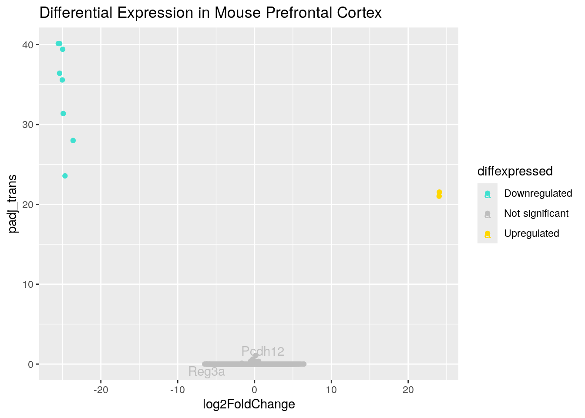
Here’s all the code we used to build a volcano plot in one place so that you can easily run it again (and make modifications).
#log transform the padj values so the y-axis is formatted for plotting
asd_vs_c$padj_trans <- -log10(asd_vs_c$padj)
#Create the diffexpressed column so that we can color the upregulated and downregulated genes on the plot
asd_vs_c$diffexpressed <- "NO"
asd_vs_c$diffexpressed[asd_vs_c$log2FoldChange > 0.6 & asd_vs_c$padj < 0.05] <- "UP"
asd_vs_c$diffexpressed[asd_vs_c$log2FoldChange < -0.6 & asd_vs_c$padj < 0.05] <- "DOWN"
#Create the gene_label column so that we can label individual points
asd_vs_c$gene_label <- case_when(
asd_vs_c$gene == "ENSMUSG00000079516" ~ "Reg3a",
asd_vs_c$gene == "ENSMUSG00000024440" ~ "Pcdh12",
TRUE ~ NA_character_
)
#Make the final plot
ggplot(data = asd_vs_c, aes(x = log2FoldChange, y = padj_trans, col = diffexpressed, label = gene_label)) +
geom_point() +
scale_color_manual(values = c("turquoise", "grey", "gold"),
labels = c("Downregulated", "Not significant", "Upregulated")) +
geom_text_repel(max.overlaps = Inf) +
ggtitle("Differential Expression in Mouse Prefrontal Cortex")Warning: Removed 17318 rows containing missing values or values outside the scale range
(`geom_point()`).Warning: Removed 55419 rows containing missing values or values outside the scale range
(`geom_text_repel()`).
Running a gene set analysis
You can use the special command runClusterProfiler to figure out the types of processes genes on your gene list are involved in. You can also create a dotplot to visualize your results. (NOTE: this is only possible if you are using the C-MOOR environment in SciServer.)
You created a gene list in the Visualize gene counts of multiple genes across groups section above. The code from this section is repeated below in case you need to run it again.
gene_set <- c("ENSMUSG00000028883", "ENSMUSG00000021936", "ENSMUSG00000020598", "ENSMUSG00000020886", "ENSMUSG00000025020", "ENSMUSG00000025958")Then we can create a subset of the asd_vs_c dataset by filtering out any genes that aren’t on our gene list. Remember, we do this using filter and %in%.
asd_vs_c_motor <- filter(asd_vs_c, asd_vs_c$gene %in% gene_set)Finally, create your cluster profile with the runClusterProfiler and dotplot commands.
asd_vs_c_clusters <- runClusterProfiler(asd_vs_c_sig)
dotplot(asd_vs_c_clusters, showCategory=34, title="asd vs control in prefrontal cortex", font.size=10, label_format = 50)